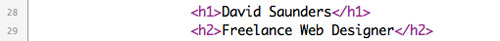
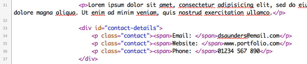
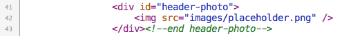
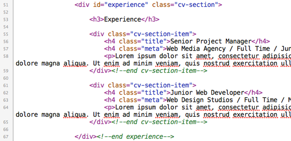

Azuka - Instructions
www.chris-creed.com
Thank you for downloading Azuka. Please read the instructions below for details on how to install and configure the Azuka template.
Would you like me to customise Azuka for you? Or is there some other design/development work you'd like doing? Get in touch with me at contact@chris-creed.com for a FREE QUOTE.
Table of Contents
1. Installation
You will notice that there are several files included in the "azuka.zip" file you downloaded. You need to upload all of these files (except for the "instructions" and the "photoshop" folders) to the root directory of your website (typically something like public_html/) using your FTP client of choice.
Once you have uploaded the files you should be able to view the template online by visiting your site's URL (i.e. http://www.yoursite.com).
2. The Header Content
There are a few things that you'll want to update in the header section - initially, you'll want to change the name and job title - to do this you will need to edit lines 28 and 29 in the index.html file:
The next thing that you'll want to update is the short bio, email, website, and phone details - you can do this in the index.html file on lines 31-37:
Change the details to your own and then save the file.
3. Add Your Own Image
To add your own image you'll need a picture of yourself that has dimensions of 200x220px - upload this image to your site's "images" folder. You'll then need to access line 42 of the index.html file:
Change the "src" attribute to the name of the image file you uploaded - then save your changes.
4. Main Content
Azuka comes with four main sections - Experience, Expertise, Education, and Training - we'll focus on only making changes to the "Experience" section, as the process for changing all of the different sections is the same.
Therefore, to change the Experience section, you'll initially need to edit lines 51-67 in your index.html file:
The text inside the <h4> elements contain the headings of each section. You'll want to change these to correspond with the work experience you want to include in the template. The <p> element underneath is where you put a short overview related to that work experience.
After you have made these changes you'll then want to move onto lines 62-64 and repeat the process again. If you'd like to add another section - copy everything from lines 55-59 and paste it under line 65.
For the other sections (Expertise, Education, and Training) find the corresponding lines of code and edit them appropriately. Ensure that you save all changes made and upload them to your site.
5. Change The Colour Scheme
A blue colour is used by default in the Azuka template and you can easily change this by editing the "style.css" file. In particular, you'll need to edit lines 33 and 46.
Change the value associated with the "color" attribute on both of these lines to the colour that you would like to be displayed instead.
Then save your changes and the template will be updated.